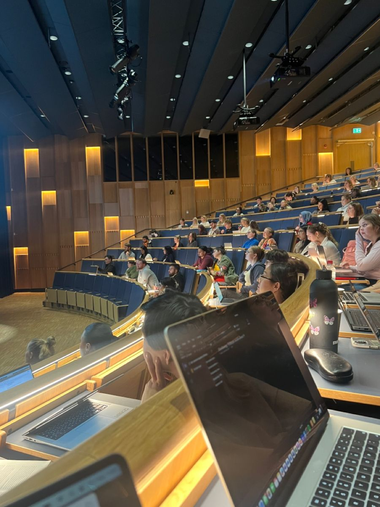

My Education – Learning Without Limits
When I arrived in Germany, everything was new — the language, the culture, the school system. I started in 5th grade, but only for two months. My teachers quickly noticed how fast I learned and decided to move me directly to 6th grade. That year, I received the award for the best student in my class — a moment that proved to me that hard work pays off, even in a completely new environment.
From there, I completed my Realschule with strong results and a growing confidence in my abilities. Education became more than just schoolwork — it was my way of proving to myself that I could adapt, learn, and excel, no matter the circumstances.
After Realschule, I moved on to the vocational high school Andreas Gordon in Erfurt to pursue my Abitur. The pace was faster, the expectations higher, and for the first time, I faced moments where my motivation slipped. But those years taught me something important: consistency matters more than short bursts of effort.
Now I’m studying computer science at the University of Applied Sciences in Erfurt — currently in my 2nd semester, soon entering my 3rd. Throughout my education, I was often among the top students in my class, not because I was the smartest, but because I refused to give up.
My path in education has been shaped by discipline, curiosity, and the belief that learning never stops. Every step — from my first day in a German classroom to my current university lectures — has prepared me for the challenges ahead. This is not the end of my education, but just another chapter in a journey that will continue for the rest of my life.